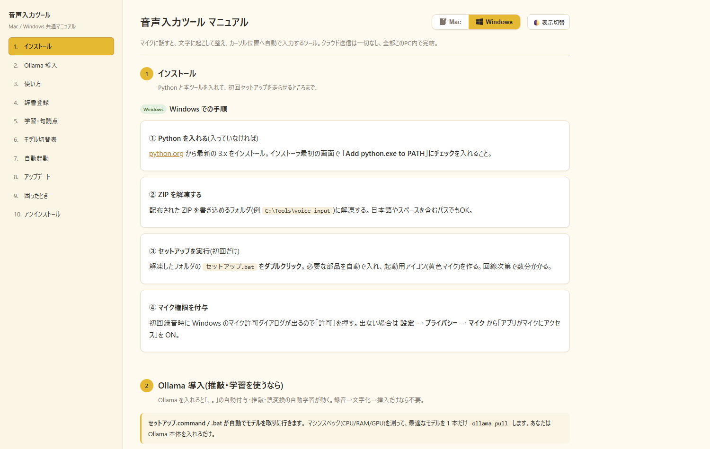

話すだけ・常駐起動
好きなキーで起動。話し終えると、いま開いているアプリのカーソル位置に文字が入ります。
どこでも入力
マイクに話すだけ。「えー」「あのー」も、よくある誤変換も、AIが裏で直してからカーソル位置へ流し込む。月額課金の音声入力アプリを、完全ローカル・無料で置き換えました。
長文を打つたびに手が止まる。アイデアの勢いがキーボードで削がれていく。
普通の音声入力は固有名詞や専門用語を外しまくり、結局手直しが必要になる。
精度の高い音声入力は有料サブスク。しかも音声がクラウドに送られる不安も。
好きなキーで起動。話し終えると、いま開いているアプリのカーソル位置に文字が入ります。
「えー」「あのー」や言い直しを自動で削除。話し言葉が、読める文章に変わります。
一度直した誤変換は記憶。次からは自動で正しい表記に。使うほど自分仕様に育ちます。
句読点付けや推敲はPC内のLLM(Ollama)が担当。音声も文章も外部に送りません。
付属のマニュアルから設定・辞書登録まで、迷わず使えるように作り込んでいます。
